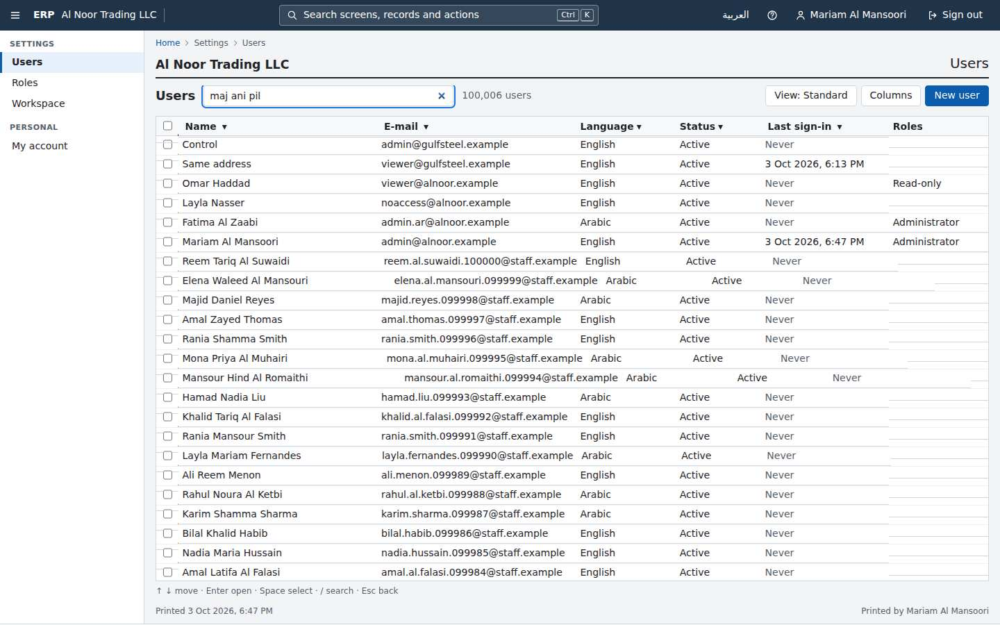
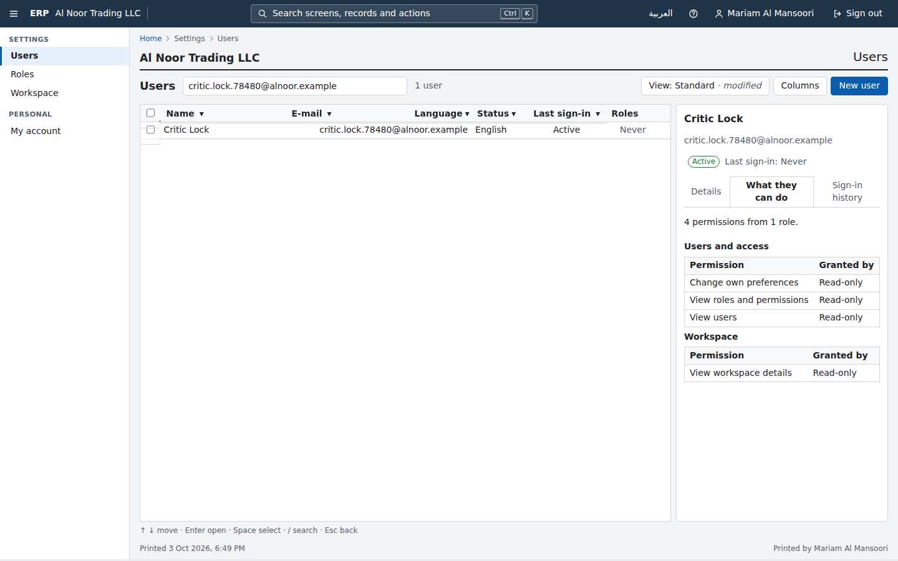
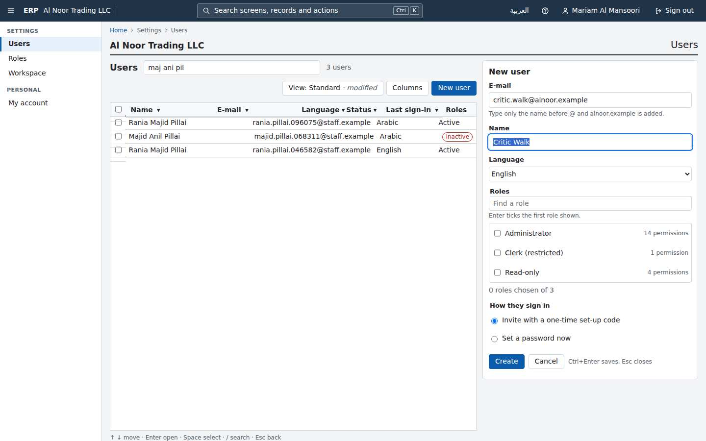
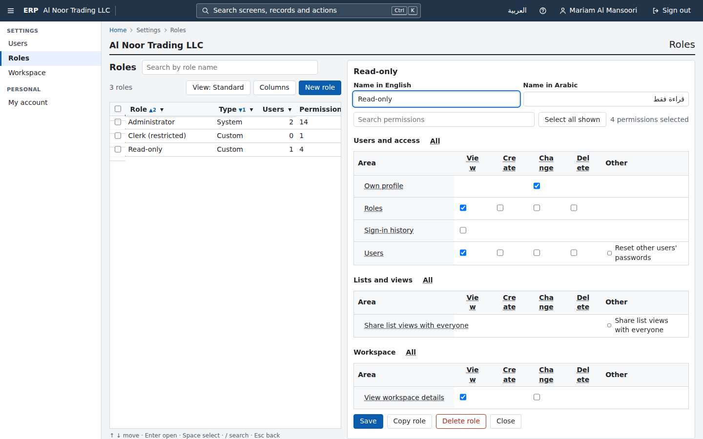
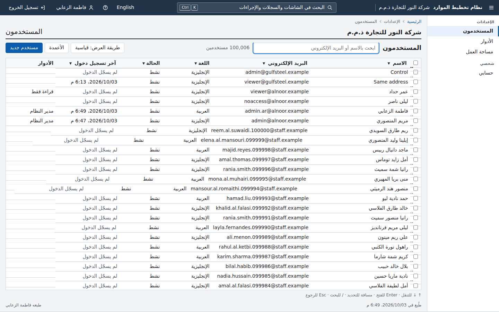
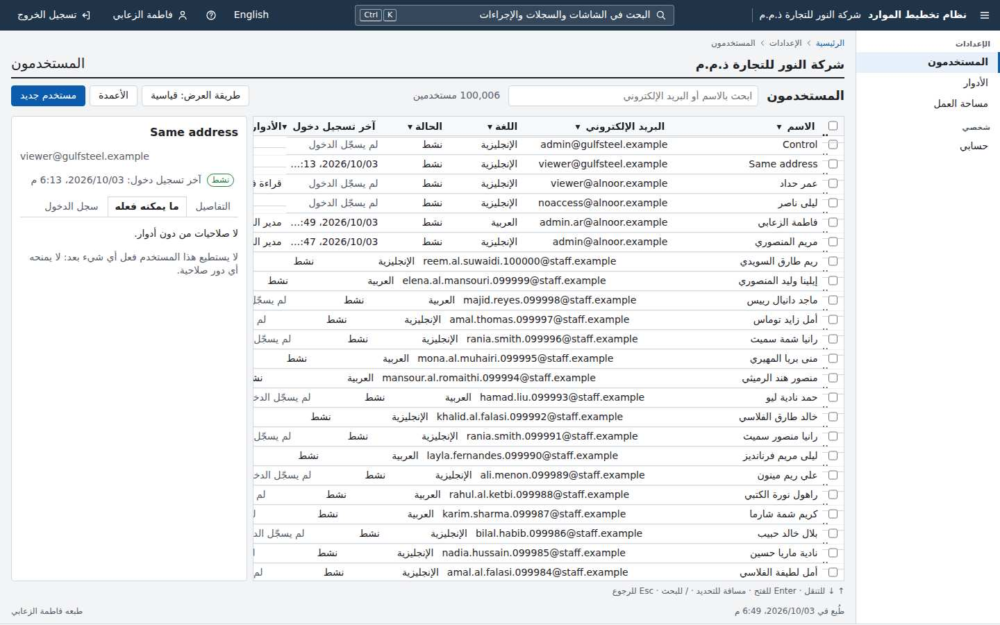
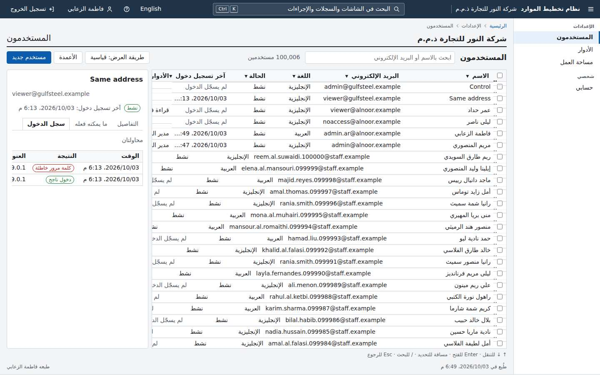
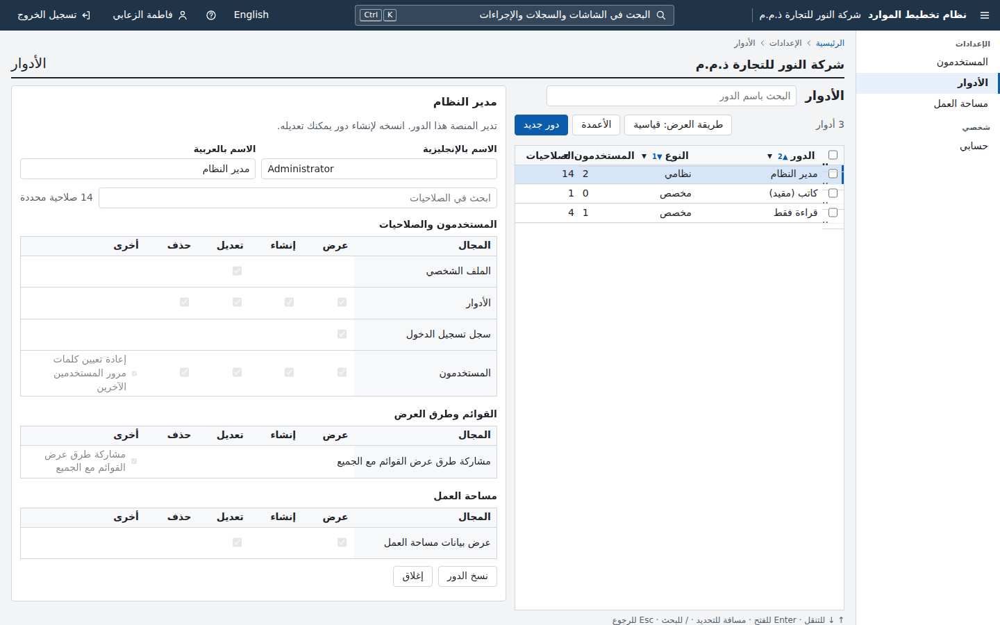

Gauntlet progress
Platform core, judged piece by piece against the owner's bar and Odoo Community. Rebuilt from gauntlet/verdicts/ by gauntlet/tools/record.mjs. Full evidence in ledger.md; owner items in needs-human.md.
Foundation and hard gates
Wave 0 · 3 rounds judgedAt 62bd546, `./erp verify` from a fresh clone failed twice in a row on this shared 4-CPU machine. Erp.Modules.Identity.Tests.UsersVolumeFixture seeds 100,000 users, then copies their credentials in one INSERT INTO identity.user_credentials ... SELECT ... FROM identity.users (IdentitySeeder.SeedVolumeAsync, line ~126-134). That statement has no CommandTimeout, so Npgsql's 30 s default applies, and the per-row audit trigger and RLS make it slow under load. The fixture throws and all 3 UsersListVolumeTests fail. Because the suite fails, the end-to-end stage and the ratchet check never run. ./erp up uses the same statement and failed the same way on an earlier attempt of this code (rc=1 after 122 s). Run alone at a lower load, the tests pass in 85 s, so G3 depends on the machine being idle. The owner's bar asks that one command takes a clean clone to all tests passing, and a UAE trading company's 100k-row lists depend on the same bulk path. Fix: give every bulk seed and COPY statement an explicit, generous timeout (or batch it), and run verify once under deliberate CPU contention (for example 3 parallel copies) before integrating. The same 3 tests are the reproduction.
- G3 clean clone: ./erp verify (build, migrate, seed, all tests) FAIL — A fresh clone at 62bd546 ran ERP_PROJECT=c-p00-foundation-r3 ERP_HTTP_PORT=20050 ERP_DB_PORT=20051 ERP_VERIFY_HTTP_PORT=20060 ERP_VERIFY_DB_PORT=20061 ./erp verify. It exited 1 after 2227 s (verify.log). Erp.Modules.Identity.Tests: 65 of 68 passed. All 3 UsersListVolumeTests failed in fixture set-up: Npgsql TimeoutException ('Timeout during reading attempt') at IdentitySeeder.SeedVolumeAsync line 134. That line is the single INSERT ... SELECT of 100,000 identity.user_credentials rows, and it runs under Npgsql's default 30 s command timeout. A second verify (verify-run2.log) failed the same 3 tests the same way. The suite stops after this failure, so the end-to-end stage never ran. Run alone on the host at a lower machine load (about 25), the same 3 tests passed in 85 s (volume-tests-rerun.log). So the one command is load-sensitive: on this shared 4-CPU machine it failed in 2 of 2 full runs.
- G3 clean clone: ./erp up (running seeded demo) PASS — ./erp up from the fresh clone with ERP_PROJECT/ERP_HTTP_PORT/ERP_DB_PORT overrides took 95 s, rc=0 (up.log). It seeded 100,004 + 1,004 users and served on :20050. The same seed statement had timed out on an earlier up of this code (prior-attempt-at-1142805/up.log, rc=1 after 122 s), so up is exposed to the same timeout.
- G1 tenant isolation (product as built) PASS — The gate suite's G1 tests passed (74/74 gate tests in verify.log). My own black-box attack (attack/http_attack.py, http_attack.out) signed in to alnoor as admin (cookie), viewer and noaccess, and also called anonymously. It sent 19,991 requests carrying gulfsteel ids, e-mails, tenant id and code through every route, query and body field of the 43 OpenAPI operations, plus 12 tenant-switch header names. 0 leaks and 0 server errors. B's table checksums were unchanged except identity.sign_in_attempts: 7 failed-sign-in rows written by POSTing B's e-mails to the anonymous sign-in endpoint. That is the expected per-account record, not a leak (b-sign-in-attempts.txt). Sign-in gives identical answers for inactive, unknown and wrong-password accounts (sign-in-oracle.txt). As erp_app (db-attack-app-role.txt): the role is not superuser and has no BYPASSRLS; it owns no table. Every tenant table returns 0 rows unbound. A tenant setting without app.tenant_tx is ignored. Bound to A, it sees 0 B rows, an insert into B is refused by RLS, it cannot read password_hash (column privilege) and cannot delete audit rows. Only 2 SECURITY DEFINER functions exist, and resolve_login is gone.
- G1 tenant isolation (gate catches planted faults in kernel) PASS — T1 (plant-T1-support-header.diff): the kernel UnitOfWorkFilter reads an 'Erp-Support-Workspace' header (no X- prefix, name in a constant) and switches the session's tenant with set_config plus the EF tenant inside ErpDbSession. The source gate MISSED it, because ErpDbSession.cs is already reviewed for set-config and tenant-setting. The HTTP attack CAUGHT it: the header was recorded at run time and 5 leaks were reported (plant-T1.log). T2 (plant-T2-rls-open-when-unbound.diff): ProtectTenantTable policy 'USING (tenant_id = current_tenant_id() OR current_tenant_id() IS NULL)'. Caught by 4 tests: standard-policy check, rows visible without a tenant, connection-level tenant, sign-in lookup (plant-T2.log).
- G2 permissions (product as built) PASS — All 19 G2 tests pass. In the browser, noaccess@ gets an empty navigation and 'No access' at /identity/users (06-noaccess-en.jpg). viewer@ sees the users list with no create, edit or share controls (07-viewer-users-en.jpg). By API, noaccess POST of a saved view returns 403.
- G2 permissions (gate catches planted faults in kernel) PASS — P1 (plant-P1-read-needs-only-session.diff): RequirePermission keeps the permission metadata but, for *.read permissions, only requires a signed-in user. Caught by 4 G2 tests: no-roles user, grant exactly one, list readable with its permission alone, sharing a view (plant-P1.log, 15/19 pass).
- Reviewed exceptions added at merge 1142805 PASS — read-permission-writes.txt (6 personal saved-view writes): legitimate. By API, a viewer cannot PUT or DELETE an admin's personal view (404) or a shared view through the personal route (404 with the right version). A smuggled isShared/ownerUserId in the body is ignored, and noaccess gets 403 (attack/saved-view-exception-probe.txt). Planted P3 (plant-P3-reader-edits-any-view.diff) drops the owner and shared filter in those excepted endpoints. The G2 gate suite missed it (19/19 pass), but Erp.Modules.Lists.Tests caught it (2 failures, plant-P3.log), so the fault does not get through the suite. tenant-bypass-sources.txt 'set-config IdentitySql.cs': legitimate. It is migration SQL of the reviewed SECURITY DEFINER verify_sign_in, which binds each candidate account's tenant inside its own body to write sign-in attempts under RLS, then clears it. That function is covered by the reviewed-lookup and credential tests (T2 tripped one of them).
- Rule gates (licence, float money, EN/AR strings, audit, OpenAPI, ratchet) PASS — All Rules.* tests pass in the gate run. The string check passed: 350 keys in English and Arabic, 34 plural messages. By hand, POST /api/identity/roles left an audit row with actor, kind 'user', field-level new values and a correlation id (audit-sample.txt). The ratchet check itself did not run, because verify stopped at the failing suite. The counts reached meet the minimums: .NET 260 vs 221, web unit 89 vs 64, compare 115 vs 114.
461 / 464 passed
3 failed · 0 skipped · 2227s
Clean clone → demo: FAIL in 2227s
| Task | Ours | Odoo | Winner |
|---|---|---|---|
| sign-in | 2 · 21 · 1.053s · 7.63s | 4 · 57 · 3.877s · 19.06s | ours |
Round 3 · judged 2026-10-03T17:12:03Z · commit 62bd546
Odoo reference rig and blind comparison harness
Wave 0 · 3 rounds judgedThe round-3 guard closes actions taken during the measured part through the page, keyboard, network and waitFor. It does not close these: (1) Page or context scripts installed in setup or signIn (page.evaluate, addInitScript, exposeFunction) are allowed and keep acting after the clock starts. The sentinel only covers the waitFor condition. (2) The start state is not checked. signIn may end on any screen with any input already typed, although the README promises 'the screen the product shows right after sign-in'. (3) op.shot() inside run() is subtracted from machine seconds while the product keeps working, so screenshots hide latency. (4) op.type accepts '\n', which presses Enter without counting a step. (5) `chain` (no M operator) is the driver's own claim and is never checked. Later critics write the ours drivers, so each of these lets a gamed or careless driver turn a loss into a recorded win. Fixes: snapshot and verify the start state (URL plus focused element plus empty inputs, or a product-neutral start check per task). Forbid evaluate, addInitScript, exposeFunction and route in drivers (lint plus guard), or reload the page before start() so set-up scripts are gone. Stop excluding screenshot time inside run(), or forbid op.shot while a step's response is pending. Reject control characters in op.type. Derive chain from the step sequence (Enter after type, type after a click on the same field) instead of trusting the flag. Add a plant test for each.
- G1 tenant isolation (product as built) PASS — Every G1 test passed in ./erp verify. My HTTP attack (attack/http-attack.mjs, http-attack.out) ran as the alnoor admin. It sent 866 requests over all 43 documented operations. B's tenant id and code, user, view, shared-view and role ids, B's e-mails and a fresh canary were placed in routes, search, filter ('in' and 'eq'), groupBy and paging parameters, and six tenant-switch header and cookie variants. Every PUT, POST and DELETE on B's ids was also tried. Result: 0 of 408 markers appeared in any body or header, and no write was accepted on a B id. B's user, views and tenant were unchanged. As erp_app (attack/db-attack-app-role.txt): unbound, 0 rows. With the GUC set but no transaction marker, 0 rows. Bound to A, only A's 100,006 users were visible and UPDATE on B changed 0 rows. INSERT into B was refused by RLS. DISABLE RLS was refused (not owner). SET ROLE erp_auth and SET ROLE erp_owner were denied. All 9 tenant tables have RLS enabled and forced. No exports, jobs or file paths exist yet.
- Instrument integrity: the harness's own guard catches planted measuring faults (this piece's surface) FAIL — Seven planted faults were all MISSED. Five generic plants (plants/critic-plants.test.mjs, critic-plants.log) ran on a stand-in page and all ended 'verified'. U1: signIn (unmeasured) runs page.evaluate to install a listener that fills the form and submits it during the measured part: 2 steps instead of 5, human 3.33 s instead of 10.11 s. U2: setup adds context.addInitScript with an F9 hook that does the whole task: 1 step. S1: op.type('y\n') presses Enter inside a typing step: 4 steps instead of 5. T1: op.shot() in a loop while the product works is subtracted from the clock: machine 0.126 s instead of 1.581 s for a 1.5 s server delay. K1: chain:true on every step drops every M: human 6.06 s instead of 10.11 s. Two plants in real ours drivers, run against my demo, also stayed 'verified'. H2 (plant-H2-start-state-find-user.diff): signIn opens Users and types the name before the clock starts, so find-user drops from 4 steps to 1 (2.65 s human). K1 on sign-in (plant-K1-chain-sign-in.diff): human 19.06 s to 16.36 s (new device) and 7.63 s to 6.28 s (returning). With either real-driver plant applied, npm test stayed green: 137 tests, 117 pass, 20 live tests skipped, 0 fail (plant-H2-npm-test.log, plant-K1-npm-test.log).
- G2 permissions (product as built) PASS — Every G2 test passed in ./erp verify. They cover: undeclared endpoints fall back to deny; a user whose roles grant nothing is denied everything and sees no menu; granting exactly one permission opens exactly the endpoints that declare it; no endpoint grants more than the caller holds; users cannot escalate their own privileges; anonymous callers get 401; sharing a view needs its permissions; the host refuses an endpoint with no permission or one outside the catalogue.
- G3 clean clone PASS — Run from my clone with ERP_PROJECT=c-p01-odoo-rig-r3 and ports 20150/20151/20160/20161. `./erp verify` returned rc=0 in 883 s with 480 tests passed and the ratchet passed (verify.log). `./erp up` returned rc=0 in 47 s (up.log). With ERP_SEED_USERS_CSV set, `./erp up` returned rc=0 in 46 s and loaded the dataset's 100,000 users (up-shared-dataset.log). The private Odoo rig (ODOO_REF_PROJECT=c-p01-odoo-rig-r3-odoo, ODOO_REF_PORT=20152) came up from empty volumes with rc=0 in 506 s under shared load (README says about 2.5 min). Every main list reached 100,000 or more. A second run took 28 s and every step added +0 (rig-up-first.log, rig-up-second.log, rig-volume.json). Port and project overrides work as documented.
- Rule gates (licence, float money, EN/AR strings, audit, OpenAPI, ratchet) PASS — All pass in ./erp verify: 350 keys in English and Arabic, accessibility 616 JSX elements, audit gate, licence gate. Ratchet minimums are met and no count fell: dotnet 245 (min 221), web 89 (64), e2e 31 (21), compare 115 (114; round 2 was 67).
480 / 480 passed
0 failed · 0 skipped · 883s
Clean clone → demo: PASS in 883s
| Task | Ours | Odoo | Winner |
|---|---|---|---|
| sign-in | 2 · 21 · 0.267s · 7.63s | 4 · 57 · 1.501s · 19.06s | ours |
| find-user | 4 · 20 · 0.413s · 14.35s | 6 · 21 · 1.393s · 14.55s | ours |
| api-update-user | 2 · 243 · 0.029s · 71.14s | 2 · 184 · 0.474s · 54.62s | odoo |
| switch-to-arabic | 1 · 0 · 0.094s · 2.65s | 6 · 1 · 3.261s · 15.28s | ours |
| find-record, create-restricted-user, custom-field-filter, import-5000, follow-approval, switch-company, add-rate, arabic-report, attach-file, configure-sequence, create-company-branch, edit-and-save, export-filtered-list, keyboard-navigation, see-and-rerun-job, who-changed-field | – | – | not-compared |


Round 3 · judged 2026-10-03T07:21:51Z · commit b0981bddc4
Tenants, companies and branches
Wave 1 · 0 rounds judgedWaiting for its first critic.
Users, roles and permissions
Wave 1 · 2 rounds judgedG2AccountTakeoverTests and GrantBearingRecords aim PUT /api/identity/users/{id} at the Administrator with one body only: the record's current values plus a changed displayName. Any path in Update that runs only when other fields change is never exercised against a stronger user. The e-mail correction is such a path, and it is new in this round. With a bypass that skips UserAccess.WithinCallerAsync when only the e-mail changes, every gate and identity test passes. Meanwhile a clerk holding users.update moves the Administrator's sign-in to an address of their choosing, and the Administrator is locked out: a takeover-class fault for the one account a UAE owner cannot lose. The same blind spot exists on screen: no unit or e2e test opens Roles as a user without identity.roles.create, so a New role button shown to everyone passes (U1). Fix: - For every non-GET user and role endpoint, build one request per writable property from the OpenAPI schema (email, displayName, displayNameAr, language, isActive, roleIds, permissions, nameEn, nameAr). Aim each at the Administrator, expecting 403 with the record unchanged, and a 2xx control on a user with no roles. - Add P5 as a gate self-test. - Extend the screens-hide matrix to every toolbar action: New user and New role for users who lack the create permission.
- G1 tenant isolation of the product as built PASS — My own attacks found no leak. Signed in as alnoor's admin, I made 26 calls against gulfsteel's ids for its admin, a B user who never signed in, the B Administrator role and another B role. They covered GET, PUT, DELETE, password, unblock, revoke, copy and access, plus search and filter with B values, tenant headers and query, sign-in naming workspace B, and the same address existing in both workspaces. Every call by id answered 404, and searches returned nothing of B. Creating an address that B already uses answered 201, the same as for an unused address. B's records were unchanged afterwards (attacks/attack-a-vs-b.txt). As the erp_app role: 0 rows with no tenant bound; bound to tenant A, 0 of B's rows visible and UPDATE 0; an insert or move into tenant B was refused by RLS; password_hash and sign_in_secret were denied; SET ROLE to erp_auth or erp_owner was refused; a tenant set at session level was ignored (attacks/db-app-role*.txt).
- G1 gate catches tenant leaks planted in this piece's surface PASS — Four leaks were planted in identity endpoints: - L1: a per-id closure cache on /users/{id}/access. Caught by both G1ProcessState and G1HttpIsolation. - L2: a per-id disk cache on /users/{id}/sign-ins, with no process state. Caught by G1HttpIsolation, with 16 leaks. - L3: a disk cache filled by PUT and served by GET /users/{id}. Caught by G1HttpIsolation (plants/plant-L1-L2-L3.log, plant-L2-alone.log). - L4: a disk registry of every address created, which answers 409 on POST /users across workspaces. Caught only by G1SignInThrottle, because it happens to create one address in two workspaces. G1HttpIsolation passed with L4 in place (plants/plant-L4.log); see other findings.
- G2 permissions of the product (restricted roles, escalation) PASS — No escalation was found in the shipped product. - The read-only user sees no New role, no Save and no reset password, has 0 enabled matrix checkboxes, and no longer gets the sign-in history tab (browser-walk.txt, screenshot 09). - The weak-user test returns 403 for both a rename and an e-mail-only edit of the Administrator (plants/plant-P5-proof-unplanted-control.log). - The G2 suite passed in verify.
- G2 gate catches permission faults planted in this piece's surface FAIL — P5 adds a bypass on PUT /api/identity/users/{id}: when only the e-mail changes, the access check on the target is skipped. With P5, G2 passes 20/20 (plants/plant-P5-alone.log) and Erp.Modules.Identity.Tests passes 73/73 (plant-P5-identity-tests.log). The proof (plants/CriticEmailProof.cs, plant-P5-proof.log): a user holding only users.update, users.read and roles.read gets 403 renaming the Administrator, but 200 changing the Administrator's sign-in to taken.over@attacker.example. The Administrator then cannot sign in (401). UI plant U1 shows New role without identity.roles.create. It passes 112/112 web unit tests and the 22 identity, permissions and shell e2e tests run against the planted UI (plant-U1-web-unit.log, plant-U1-e2e.log). A read-only user then sees New role, which opens a disabled form (plant-U1-proof.txt). The other permission plants were caught: - P1, revoke-sessions with no access check, by GrantBearingRecords and the self test. - P3, no permission on /access, because the host refuses to start. - P4, role update with no grant check, by No_endpoint_grants_more_than_the_caller_holds. - P2, sign-ins guarded by users.read, only incidentally by the dead-permission rule (plant-P1-P5.log, plant-P1-P2-P4-P5.log).
- G3 clean clone: one command builds, migrates, seeds, tests PASS — On a fresh clone of 2367c54, ./erp verify with ERP_PROJECT=c-p03-identity-r2 and ports 20350, 20351, 20360 and 20361 finished with rc=0 in 1552 s on a machine at load average about 25. It ran 270 .NET, 112 web unit, 36 e2e and 116 compare tests, and the ratchet check passed (verify.log).
- G3 clean clone: one command to running seeded demo PASS — ./erp up with ERP_SEED_USERS_CSV (the shared dataset) and ERP_HTTP_PORT=20350 was serving in 79 s, with 100,006 users in alnoor (up-dataset.log, screenshot 05).
- Rule gates (licences, money, strings, audit) and ratchet PASS — Passed inside verify, and every ratchet minimum held or rose: suites went from r1's 158/74/24/68 to 270/112/36/116. In the database, audit.entries holds user-attributed rows for users, user_roles, user_credentials, roles and sessions. password_hash is stored as [redacted] (audit-sample.txt).
534 / 534 passed
0 failed · 0 skipped · 1552s
Clean clone → demo: PASS in 1631s
| Task | Ours | Odoo | Winner |
|---|---|---|---|
| create-restricted-user | 5 · 35 · 1.224s · 20.3s | 10 · 46 · 9.114s · 30.05s | ours |
| find-user (find one user among 100,000) | 3 · 11 · 0.719s · 10.53s | 6 · 21 · 3.407s · 14.55s | ours |
















Round 2 · judged 2026-10-03T18:59:31Z · commit 2367c546ea
English/Arabic app shell
Wave 1 · 3 rounds judgedIn round 3 the shell forgets local, session and IndexedDB storage, Cache Storage and JS memory at sign-out, and the browser gate judges exactly those carriers. It does not cover the tab's own session history or cookies. The list and palette write the user's search text and the opened record's e-mail and id into the address (?q=, ?open=). location.replace('/') replaces only the current entry, so the earlier entries stay. When the next person in the same tab presses Back, their own screen opens with the previous tenant's search text and record. A cookie written by any screen also survives sign-out, and every gate passes. Picture a UAE bookkeeper serving several client companies from one browser, or a shared counter PC. The next client's user sees the previous client's supplier and customer names in their own search box. This also caps the shell's keyboard and Arabic wins over Odoo, because the same shared-device use is what the one-step language switch and keyboard paths serve. Fix: (1) Do not trust address state from history entries created by another identity: stamp history.state with the identity on pushState/replaceState, and drop q, open and similar parameters on load when the stamp differs or is missing. Or keep record ids and search text out of the URL for entries older than the session. (2) In forgetIdentity(), expire every non-HttpOnly cookie on the origin and reset window.name. (3) Add carriers to the browser gate: cookies (document.cookie and context.cookies()), window.name, and A pressing Back after signing in, judged on page, inputs and URL. Keep C2 and a history plant as gate self-tests.
- G1 tenant isolation: the suite, plus my own attacks on the product as built (server side) PASS — Every G1 test passed in ./erp verify (Gates 82/82). Over HTTP, signed in as alnoor (A), I attacked gulfsteel (B) (attack-http.txt). PUT /me/preferences with B's userId, tenantId and id in the body and query, and with X-Tenant-Id, X-User-Id and X-Tenant headers, changed only A's row; B's prefs were unchanged. GET /users/{B id} and /users/{B id}/access returned 404. search=gulfsteel found 0. /tenancy/tenant with B's X-Tenant-Id returned alnoor. Saved views are per tenant. Every /api response carries Cache-Control: no-store. The session cookie is HttpOnly and SameSite=Strict. Path traversal returns the SPA index only. As erp_app (attack-db-app-role.txt), with no tenant set, identity.users shows 0 rows. SET ROLE erp_auth/erp_owner is denied, rolbypassrls=f, and sign_in_secret is denied.
- G1 in the browser: one tab, tenant B then tenant A (the product as built) FAIL — history-leak.txt, 09-tenant-A-back-shows-B-search.jpg. In one tab, B (admin@gulfsteel) types 'Khalifa Steel Supplies' in the Users search, which writes ?q= to the address. B moves to Roles and signs out. A (admin@alnoor) signs in in the same tab and presses the browser's Back button. A's Users screen opens at /identity/users?q=Khalifa+Steel+Supplies, with B's search text in A's search box, and A's list runs it. Opening a record from the palette writes ?q=<e-mail>&open=<user id> the same way, so B's record e-mail and id also reach A through history. forgetIdentity() clears storage and replaces the current entry, but not the earlier session-history entries. The e2e Back test runs before A signs in and looks only for tenant names.
- G1 catches a tenant leak planted in this piece's surface FAIL — Plant C2 (plant-C2-recent-record-cookie.diff): CommandPalette.run() writes the opened record's title, e-mail and path to a non-HttpOnly cookie, erp.recentRecord, that nothing clears. The gates missed it: G1ClientStateTests (static inventory), vitest clientIsolation.test.tsx (4/4 passed, plant-C2-vitest.txt) and e2e client-isolation.spec.ts on the planted build (4/4 passed, plants/C2/e2e.log). Live (plants/C2/live-demo.txt): after B signs out and A signs in in the same tab, A's document.cookie holds 'Fatima Al Zaabi admin.ar@gulfsteel.example /identity/users?q=...&open=01a103da-...'. The judges inspect 8 carriers: page, inputs, title, local/session storage, IndexedDB, Cache Storage and heap. They do not inspect cookies, window.name or history. Caught: C1, a palette cache in window.name, was caught by both the vitest gate and the e2e gate (page and heap judges, plants/C1). S1, the last caller's e-mail in a temp file appended to the /me/preferences answer, was caught by G1HttpIsolationTests with 8 write-pair leaks (plants/S1/gates.log).
- G2 permissions: every action is denied unless a role grants it (plant in this piece's surface) FAIL — Plant N1 (plant-N1-preferences-of-another-user.diff) adds an optional, documented userId to UpdatePreferencesRequest, and /me/preferences then updates that user. Erp.Gates.Tests passed 82/82 with it (plants/N1/gates.log). Live (plants/N1/live-demo.txt): viewer@alnoor holds identity.profile.update but not identity.users.update. The viewer set admin@alnoor's language to ar and digits to arab: 200, and the admin's session shows the change. PUT /users/{admin} itself answered 403. G2 checks which permission an endpoint declares, not which record a 'me' endpoint acts on.
- G3 clean clone: one command builds, migrates, seeds and passes all tests FAIL — `ERP_PROJECT=c-p04-shell-r3 ERP_HTTP_PORT=20450 ERP_DB_PORT=20451 ERP_VERIFY_HTTP_PORT=20460 ERP_VERIFY_DB_PORT=20461 ./erp verify` exited 1 after 2061 s at stage 1/3 (verify.log). The failing test was UsersListVolumeTests.Sorted_filtered_grouped_and_deep_keyset_pages_stay_within_budget: '/api/identity/users?take=100&sort=email: median 292 ms, slowest 1036 ms', over its 1000 ms ceiling. The machine's load average was 25-33 on 4 CPUs at the time. Run alone afterwards it passed 3/3 (volume-rerun-isolated.log). The other half, `./erp up` with the same overrides, gave a running seeded demo with 100,006 users in 92 s with the image cached (up.log).
- Rule gates (licences, no float money, EN/AR strings, audit, logical CSS, kernel formatter, a11y, client module-state inventory) PASS — npm run check (strings, accessibility) passed. The web unit tests passed 119/119. plant-self-test.mjs caught 5/5 of its own plants. ShellGate, StringGate, Licence, Money, Audit, G1ClientStateTests and the OpenAPI gates passed. The ratchet only went up since r2: dotnet 261 to 273, web 93 to 119, e2e 34 to 45, endpointsAttacked 45 to 52, plus new client-state minimums.
552 / 553 passed
1 failed · 0 skipped · 2177s
Clean clone → demo: FAIL in 2061s
| Task | Ours | Odoo | Winner |
|---|---|---|---|
| switch-to-arabic | 1 · 0 · 0.112s · 2.65s | 6 · 1 · 4.619s · 15.28s | ours |
| reach-screen-keyboard | 2 · 3 · 0.166s · 2.59s | 3 · 8 · 1.17s · 3.99s | ours |
| open-third-user-keyboard (critic-added in r2, kept) | 6 · 7 · 0.32s · 5.06s | 8 · 13 · 2.035s · 6.74s | ours |
| keyboard-navigation (open the third contact by keyboard) | – | 9 · 10 · 2.021s · 7.25s | not-compared |


Round 3 · judged 2026-10-03T23:01:52Z · commit dbd6e847d7
List and search framework
Wave 1 · 1 round judgedEvery list registered with p05 relies on G1 to catch leaks automatically, but G1 only flags a leak when one of tenant B's id or text markers shows up in a response. A shared cache in the list engine that carries tenant B's aggregates (totals, group counts, sums) into tenant A's answers passes every gate. The process-state gate also exempts the list bindings: ModuleCatalog._modules is reviewed wholesale, so instance fields of ListBinding<T> are never inspected. Grouping with totals is exactly where money modules will cache. The gate needs to (a) inspect ListBinding and other per-registration objects for mutable state, and (b) check list totals and group counts that tenant A receives against tenant A's own row count (for example, compare the first-page total with an exhaustive keyset walk, and the group counts with A-only database counts, after B ran the same queries). A second, smaller gate gap is G2: it never checks shared-view PUT/DELETE by a user who holds lists.views.share but not the list's permission.
- G1 tenant isolation (product as built) PASS — The gate suite passes (G1HttpIsolation: 51 endpoints, about 34,000 requests). My own attacks as admin@gulfsteel against alnoor (100,004 users) all came back clean: search, filters (eq, in, an injected quote, % and _ wildcards), groupBy, X-Tenant headers, tenantId/tenant query parameters, a replayed and a forged keyset cursor, GET/PUT/DELETE on alnoor's shared and personal view ids. Database: erp_app has no BYPASSRLS. It sees 0 rows unbound and 0 alnoor rows when bound to gulfsteel, and an insert into lists.saved_views for the other tenant is refused by RLS. Details in attack-api.txt.
- G1 catches faults planted in p05's surface FAIL — Plant L3 (plants/L3-engine-count-cache.patch) adds a 60-second count cache to ListBinding.QueryAsync, keyed by search and filter with no tenant. G1HttpIsolationTests still PASSED (plants/run-L3P1P2.log, 5 min 3 s). On a live stack the leak is real: gulfsteel searches 'a' and gets total 1004; alnoor then searches 'a' and gets total 1004, while its true count is 2005 (plants/plant-live-demo.txt). G1ProcessStateTests also passed with page-cache plants L1, L2 and L3, because ModuleCatalog._modules is allow-listed wholesale and ListBinding instances are never inspected. L1 (page cache) and L2 (closure-captured views cache) were caught by the HTTP attack (run-L1L2.log, 1498 leaks).
- G2 permissions (product as built) PASS — viewer: list 200, definition 200, personal view 201, create/delete shared view 403. noaccess: 403 on everything. Unauthenticated: 401. The gate suite passes.
- G2 catches faults planted in p05's surface FAIL — Plant P2 (plants/P2-delete-without-list-permission.patch) removes the list's own permission check from shared-view DELETE. All 17 G2 tests PASSED (plants/run-P2.log). Live: a user whose only role holds lists.views.share gets 403 on GET /api/lists/identity.users/views, but 204 on DELETE /api/lists/identity.users/shared-views/{id}, which deletes the workspace's Team view (plant-live-demo.txt). Plant P1 (sharing guarded by the read permission) was caught by Every_registered_list_is_readable_with_its_permission_alone.
- G3 clean clone PASS — Fresh clone at 0ab81d7. `ERP_PROJECT=c-p05-list-search-r1 ERP_HTTP_PORT=20550 ERP_DB_PORT=20551 ERP_VERIFY_HTTP_PORT=20560 ERP_VERIFY_DB_PORT=20561 ./erp verify` passed in 660 s and the ratchet check passed. `./erp up` with ERP_SEED_USERS_CSV (shared dataset) gave a running demo with 100,004 users in 58 s. Ports and project overrides worked.
- Rule gates (licence, money, strings, audit, list index) PASS — Pass inside verify. Saved-view insert, update and delete all write audit.entries with the actor and old/new values (checked in the database).
433 / 433 passed
0 failed · 0 skipped · 660s
Clean clone → demo: PASS in 660s
| Task | Ours | Odoo | Winner |
|---|---|---|---|
| find-user (find one user among 100,000; p16 contacts not built, so the critic used the largest list, users from the shared dataset) | 3 · 21 · 0.249s · 8.47s | 6 · 21 · 1.58s · 14.55s | odoo |


Round 1 · judged 2026-10-03T06:48:15Z · commit 0ab81d7f7f
Form and report framework
Wave 2 · 0 rounds judgedWaiting for its first critic.
Audit trail
Wave 2 · 0 rounds judgedWaiting for its first critic.
Multi-currency
Wave 2 · 0 rounds judgedWaiting for its first critic.
Tenant-defined custom fields
Wave 2 · 0 rounds judgedWaiting for its first critic.
Document numbering
Wave 2 · 0 rounds judgedWaiting for its first critic.
Attachments
Wave 2 · 0 rounds judgedWaiting for its first critic.
Background jobs
Wave 2 · 0 rounds judgedWaiting for its first critic.
Approval flows
Wave 3 · 0 rounds judgedWaiting for its first critic.
Import and export
Wave 3 · 0 rounds judgedWaiting for its first critic.
Documented API for everything
Wave 3 · 0 rounds judgedWaiting for its first critic.
Shared Contacts directory
Wave 2 · 0 rounds judgedWaiting for its first critic.